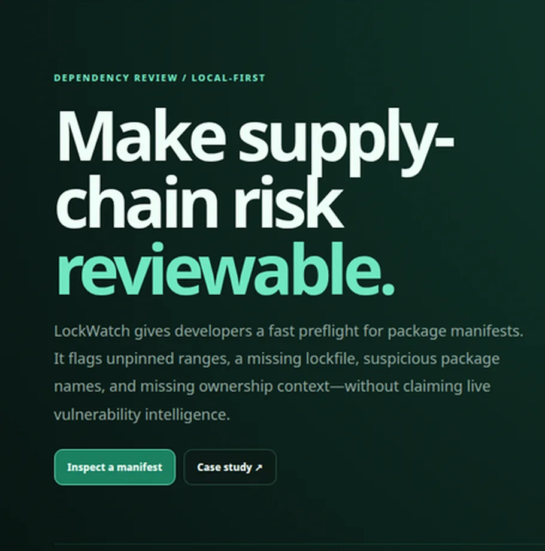
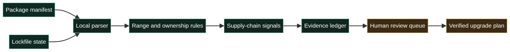

Durable job
Make dependency intent and missing evidence visible before an install or merge.
LockWatch is a local-first manifest preflight for the daily moment before a dependency change is merged. It surfaces floating ranges, missing lock evidence, and ownership questions without pretending that a local heuristic is a live vulnerability feed.

Modern teams reuse a large dependency graph while AI-assisted coding can propose plausible names or versions. The durable engineering job is not generating one more package line; it is knowing what changed, who owns it, what evidence exists, and how to roll back. LockWatch targets application developers, platform teams, and reviewers.
Make dependency intent and missing evidence visible before an install or merge.
Separate a local review signal from a confirmed vulnerability so the queue does not create false certainty.
| Decision | Choice | Reason |
|---|---|---|
| Data boundary | Read names and ranges locally | No registry access or package installation in the public MVP. |
| Signal model | Range, lockfile, ownership, and provenance questions | Review questions remain explainable. |
| Output | Human review queue | Ownership and verified evidence remain required. |
The pipeline parses a manifest and lockfile state, applies local rules, records evidence, and returns a review queue. The repository contains both the editable Mermaid source and the rendered architecture image.

The risky fixture produced seven local review items: floating ranges, two ownership signals, and a missing lockfile state. The report showed `Review required` with three blocking signals. These are fixture observations, not live vulnerability findings or customer outcomes.
Boundary: LockWatch is not a CVE scanner, malware detector, registry replacement, or supply-chain certification.
Add lockfile parsing, SBOM export, provenance and signature verification, trusted advisory feeds with freshness metadata, CI policy output, and package ownership workflows.